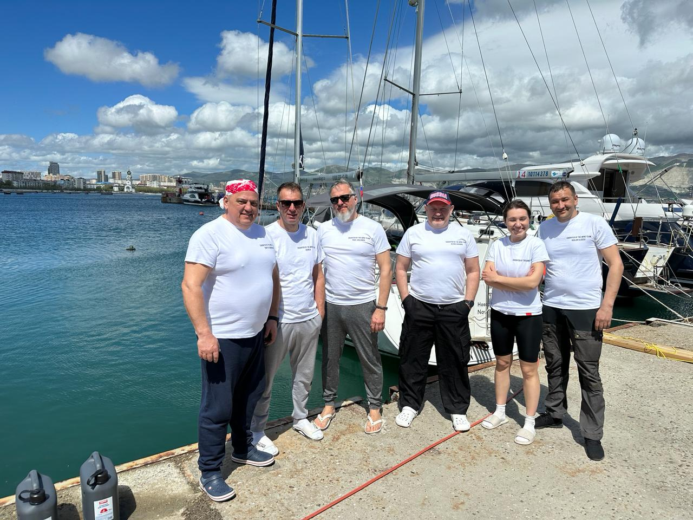
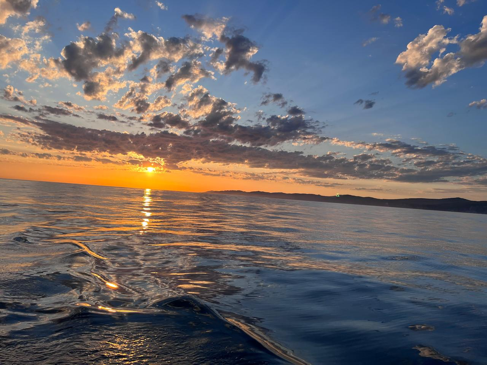
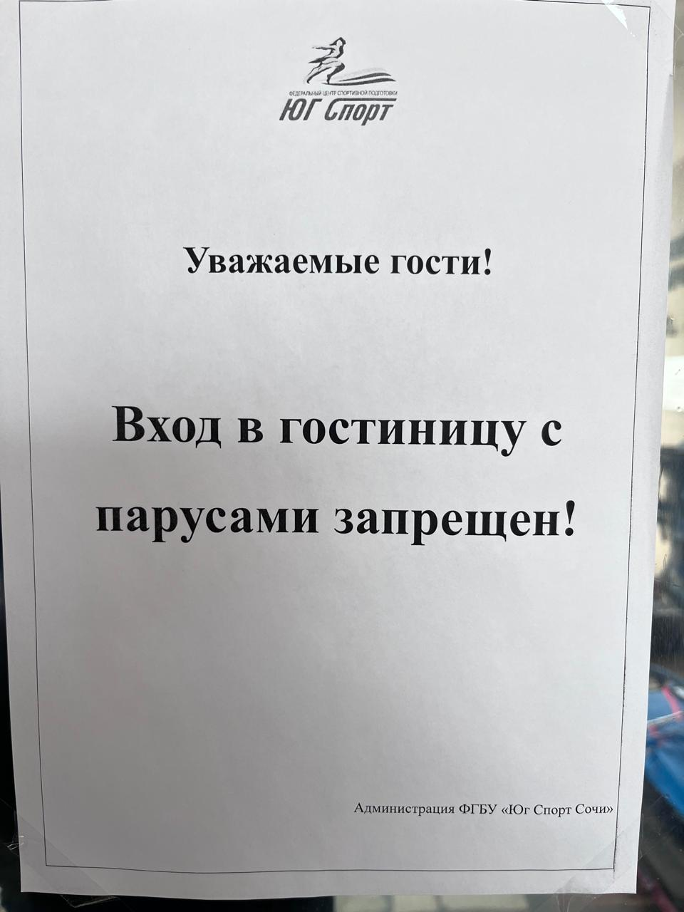
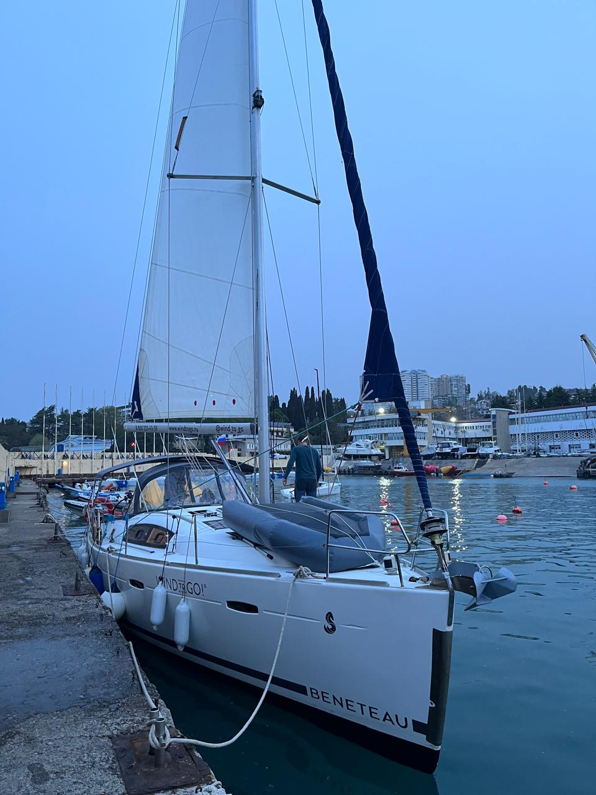

Морской переход: Новороссийск — Сочи — Новороссийск
Реальный опыт прибрежного плавания по Черному морю: слаженная работа команды, быт на переходе, встречи с дельфинами и сочинские береговые формальности.

1. Команда в сборе
Экипаж на причале перед выходом. На всех — фирменные футболки в поддержку кругосветного плавания шкипера Виталия Елагина (Cape Horn 2024).
2. Морские попутчики
Стая дельфинов сопровождает яхту, идя прямо под форштевнем. Неизменная и самая красивая традиция черноморских переходов.

3. Магия горизонта
Штилевой вечерний горизонт и потрясающий морской закат на траверзе кавказского побережья.
4. Камбузные будни
Экстремальная кулинария на ходу: мастер-класс по виртуозному переворачиванию блинов на яхтенной плите.

5. Береговой юмор
Суровые сочинские правила в марине «Юг Спорт»: напоминание о том, что паруса всё-таки лучше оставлять на лодке.

6. На стоянке в Сочи
Наша Beneteau ошвартована у пирса в сумерках. Цель похода достигнута, впереди — обратный галс на Новороссийск.